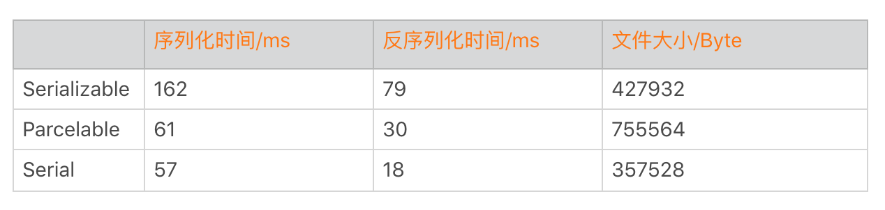
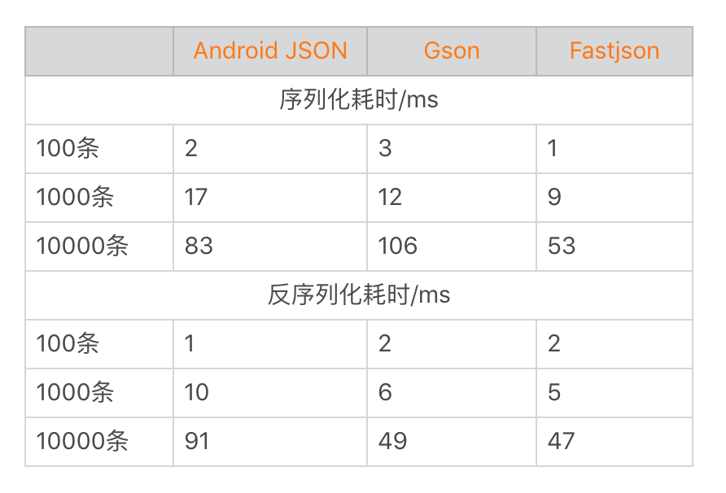
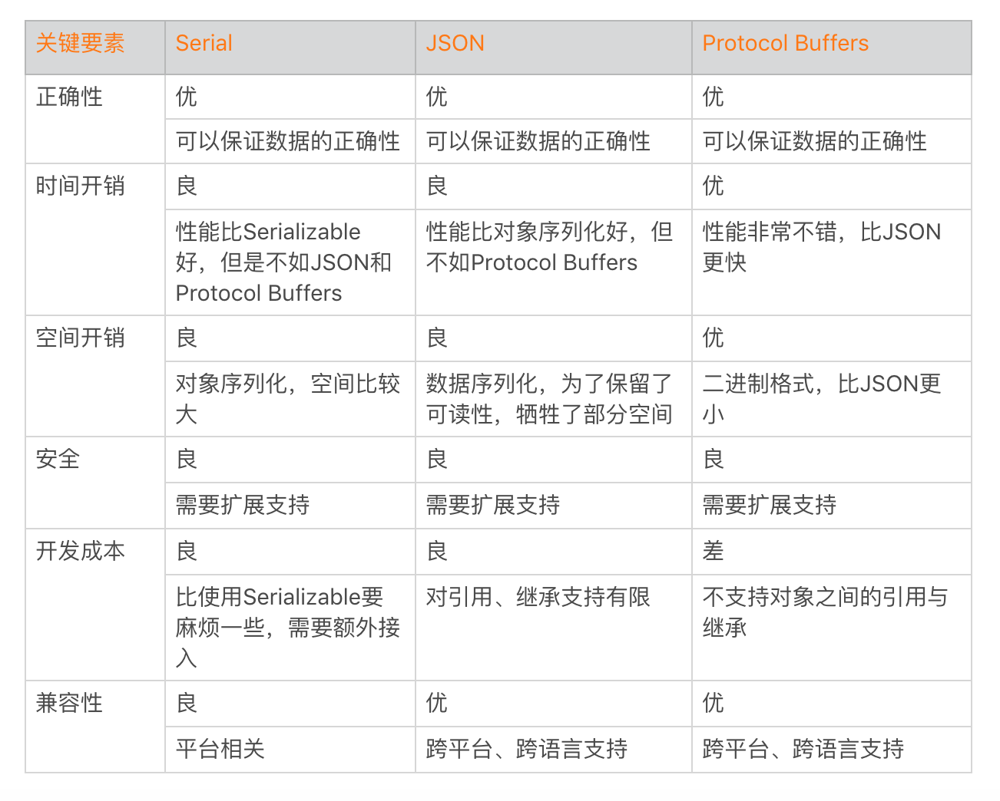
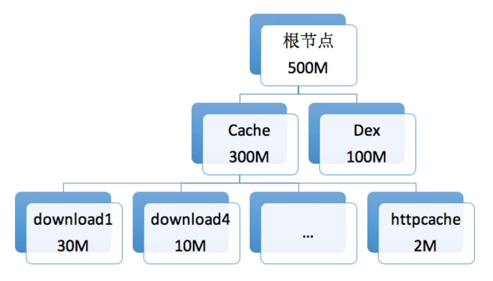

“将特定结构的数据转化为另一种能被记录和还原的格式”，这是我在上一期对存储下的一个定义。
再来复习一下数据存储的六个关键要素：正确性、时间开销、空间开销、安全、开发成本和兼容性。我们不可能同时把所有要素都做到最好，所谓数据存储优化就是根据自己的使用场景去把其中的一项或者几项做到最好。
更宽泛来讲，我认为数据存储不一定就是将数据存放到磁盘中，比如放到内存中、通过网络传输也可以算是存储的一种形式。或者我们也可以把这个过程叫作对象或者数据的序列化。
对于大部分的开发者来说，我们不一定有精力去“创造”一种数据序列化的格式，所以我今天主要来讲讲 Android 常用的序列化方法如何进行选择。
对象的序列化
应用程序中的对象存储在内存中，如果我们想把对象存储下来或者在网络上传输，这个时候就需要用到对象的序列化和反序列化。
对象序列化就是把一个 Object 对象所有的信息表示成一个字节序列，这包括 Class 信息、继承关系信息、访问权限、变量类型以及数值信息等。
1. Serializable
Serializable 是 Java 原生的序列化机制，在 Android 中也有被广泛使用。我们可以通过 Serializable 将对象持久化存储，也可以通过 Bundle 传递 Serializable 的序列化数据。
Serializable 的原理
Serializable 的原理是通过 ObjectInputStream 和 ObjectOutputStream 来实现的，我们以 Android 6.0 的源码为例，你可以看到ObjectOutputStream的部分源码实现：
private void writeFieldValues(Object obj, ObjectStreamClass classDesc) { for (ObjectStreamField fieldDesc : classDesc.fields()) { ... Field field = classDesc.checkAndGetReflectionField(fieldDesc); ...整个序列化过程使用了大量的反射和临时变量，而且在序列化对象的时候，不仅会序列化当前对象本身，还需要递归序列化对象引用的其他对象。
整个过程计算非常复杂，而且因为存在大量反射和 GC 的影响，序列化的性能会比较差。另外一方面因为序列化文件需要包含的信息非常多，导致它的大小比 Class 文件本身还要大很多，这样又会导致 I/O 读写上的性能问题。
Serializable 的进阶
既然 Serializable 性能那么差，那它有哪些优势呢？可能很多同学都不知道它还有一些进阶的用法，你可以参考《Java 对象序列化，您不知道的 5 件事》这篇文章。
-
writeObject 和 readObject 方法。Serializable 序列化支持替代默认流程，它会先反射判断是否存在我们自己实现的序列化方法 writeObject 或反序列化方法 readObject。通过这两个方法，我们可以对某些字段做一些特殊修改，也可以实现序列化的加密功能。
-
writeReplace 和 readResolve 方法。这两个方法代理序列化的对象，可以实现自定义返回的序列化实例。那它有什么用呢？我们可以通过它们实现对象序列化的版本兼容，例如通过 readResolve 方法可以把老版本的序列化对象转换成新版本的对象类型。
Serializable 的序列化与反序列化的调用流程如下。
// 序列化E/test:SerializableTestData writeReplaceE/test:SerializableTestData writeObject // 反序列化E/test:SerializableTestData readObjectE/test:SerializableTestData readResolveSerializable 的注意事项
Serializable 虽然使用非常简单，但是也有一些需要注意的事项字段。
-
不被序列化的字段。类的 static 变量以及被声明为 transient 的字段，默认的序列化机制都会忽略该字段，不会进行序列化存储。当然我们也可以使用进阶的 writeReplace 和 readResolve 方法做自定义的序列化存储。
-
serialVersionUID。在类实现了 Serializable 接口后，我们需要添加一个 Serial Version ID，它相当于类的版本号。这个 ID 我们可以显式声明也可以让编译器自己计算。通常我建议显式声明会更加稳妥，因为隐式声明假如类发生了一点点变化，进行反序列化都会由于 serialVersionUID 改变而导致 InvalidClassException 异常。
-
构造方法。Serializable 的反序列默认是不会执行构造函数的，它是根据数据流中对 Object 的描述信息创建对象的。如果一些逻辑依赖构造函数，就可能会出现问题，例如一个静态变量只在构造函数中赋值，当然我们也可以通过进阶方法做自定义的反序列化修改。
2. Parcelable
由于 Java 的 Serializable 的性能较低，Android 需要重新设计一套更加轻量且高效的对象序列化和反序列化机制。Parcelable 正是在这个背景下产生的，它核心的作用就是为了解决 Android 中大量跨进程通信的性能问题。
Parcelable 的永久存储
Parcelable 的原理十分简单，它的核心实现都在Parcel.cpp。
你可以发现 Parcel 序列化和 Java 的 Serializable 序列化差别还是比较大的，Parcelable 只会在内存中进行序列化操作，并不会将数据存储到磁盘里。
当然我们也可以通过Parcel.java的 marshall 接口获取 byte 数组，然后存在文件中从而实现 Parcelable 的永久存储。
// Returns the raw bytes of the parcel.public final byte[] marshall() { return nativeMarshall(mNativePtr);}// Set the bytes in data to be the raw bytes of this Parcel.public final void unmarshall(byte[] data, int offset, int length) { nativeUnmarshall(mNativePtr, data, offset, length);}Parcelable 的注意事项
在时间开销和使用成本的权衡上，Parcelable 机制选择的是性能优先。
所以它在写入和读取的时候都需要手动添加自定义代码，使用起来相比 Serializable 会复杂很多。但是正因为这样，Parcelable 才不需要采用反射的方式去实现序列化和反序列化。
虽然通过取巧的方法可以实现 Parcelable 的永久存储，但是它也存在两个问题。
-
系统版本的兼容性。由于 Parcelable 设计本意是在内存中使用的，我们无法保证所有 Android 版本的Parcel.cpp实现都完全一致。如果不同系统版本实现有所差异，或者有厂商修改了实现，可能会存在问题。
-
数据前后兼容性。Parcelable 并没有版本管理的设计，如果我们类的版本出现升级，写入的顺序及字段类型的兼容都需要格外注意，这也带来了很大的维护成本。
一般来说，如果需要持久化存储的话，一般还是不得不选择性能更差的 Serializable 方案。
3. Serial
作为程序员，我们肯定会追求完美。那有没有性能更好的方案并且可以解决这些痛点呢？
事实上，关于序列化基本每个大公司都会自己自研的一套方案，我在专栏里推荐 Twitter 开源的高性能序列化方案Serial。那它是否真的是高性能呢？我们可以将它和前面的两套方案做一个对比测试。

从图中数据上看来，Serial 在序列化与反序列化耗时，以及落地的文件大小都有很大的优势。
从实现原理上看，Serial 就像是把 Parcelable 和 Serializable 的优点集合在一起的方案。
-
由于没有使用反射，相比起传统的反射序列化方案更加高效，具体你可以参考上面的测试数据。
-
开发者对于序列化过程的控制较强，可定义哪些 Object、Field 需要被序列化。
-
有很强的 debug 能力，可以调试序列化的过程。
-
有很强的版本管理能力，可以通过版本号和 OptionalFieldException 做兼容。
数据的序列化
Serial 性能看起来还不错，但是对象的序列化要记录的信息还是比较多，在操作比较频繁的时候，对应用的影响还是不少的，这个时候我们可以选择使用数据的序列化。
1. JSON
JSON 是一种轻量级的数据交互格式，它被广泛使用在网络传输中，很多应用与服务端的通信都是使用 JSON 格式进行交互。
JSON 的确有很多得天独厚的优势，主要有：
-
相比对象序列化方案，速度更快，体积更小。
-
相比二进制的序列化方案，结果可读，易于排查问题。
-
使用方便，支持跨平台、跨语言，支持嵌套引用。
因为每个应用基本都会用到 JSON，所以每个大厂也基本都有自己的“轮子”。例如 Android 自带的 JSON 库、Google 的Gson、阿里巴巴的Fastjson、美团的MSON。
各个自研的 JSON 方案主要在下面两个方面进行优化：
-
便利性。例如支持 JSON 转换成 JavaBean 对象，支持注解，支持更多的数据类型等。
-
性能。减少反射，减少序列化过程内存与 CPU 的使用，特别是在数据量比较大或者嵌套层级比较深的时候效果会比较明显。

在数据量比较少的时候，系统自带的 JSON 库还稍微有一些优势。但在数据量大了之后，差距逐渐被拉开。总的来说，Gson 的兼容性最好，一般情况下它的性能与 Fastjson 相当。但是在数据量极大的时候，Fastjson 的性能更好。
2. Protocol Buffers
相比对象序列化方案，JSON 的确速度更快、体积更小。不过为了保证 JSON 的中间结果是可读的，它并没有做二进制的压缩，也因此 JSON 的性能还没有达到极致。
如果应用的数据量非常大，又或者对性能有更高的要求，此时Protocol Buffers是一个非常好的选择。它是 Google 开源的跨语言编码协议，Google 内部的几乎所有 RPC 都在使用这个协议。
下面我来总结一下它的优缺点。
-
性能。使用了二进制编码压缩，相比 JSON 体积更小，编解码速度也更快，感兴趣的同学可以参考protocol-buffers 编码规则。
-
兼容性。跨语言和前后兼容性都不错，也支持基本类型的自动转换，但是不支持继承与引用类型。
-
使用成本。Protocol Buffers 的开发成本很高，需要定义.proto 文件，并用工具生成对应的辅助类。辅助类特有一些序列化的辅助方法，所有要序列化的对象，都需要先转化为辅助类的对象，这让序列化代码跟业务代码大量耦合，是侵入性较强的一种方式。
对于 Android 来说，官方的 Protocol Buffers 会导致生成的方法数很多。我们可以修改它的自动代码生成工具，例如在微信中，每个.proto 生成的类文件只会包含一个方法即 op 方法。
public class TestProtocal extends com.tencent.mm.protocal.protobuf { @Override protected final int op(int opCode, Object ...objs) throws IOException { if (opCode == OPCODE_WRITEFIELDS) { ... } else if (opCode == OPCODE_COMPUTESIZE) { ...Google 后面还推出了压缩率更高的 FlatBuffers，对于它的使用你可以参考《FlatBuffers 体验》。最后，我再结合“六要素”，帮你综合对比一下 Serial、JSON、Protocol Buffers 这三种序列化方案。

存储监控
通过本地实验我们可以对比不同文件存储方法的性能，但是实验室环境不一定能真实反映用户实际的使用情况，所以我们同样需要对存储建立完善的监控。那么应该监控哪些内容呢？
1. 性能监控
正确性、时间开销、空间开销、安全、开发成本和兼容性，对于这六大关键要素来说，在线上我更关注：
- 正确性
在专栏第 9 期中我讲过，应用程序、文件系统或者磁盘都可以导致文件损坏。
在线上我希望可以监控存储模块的损坏率，在专栏上一期中也提到 SharedPreferences 的损坏率大约在万分之一左右，而我们内部自研的 SharedPreferences 的损耗率在十万分之一左右。如何界定一个文件是损坏的？对于系统 SP 我们将损坏定义为文件大小变为 0，而自研的 SP 文件头部会有专门的校验字段，比如文件长度、关键位置的 CRC 信息等，可以识别出更多的文件损坏场景。在识别出文件损坏之后，我们还可以进一步做数据修复等工作。
- 时间开销
存储模块的耗时也是我非常关心的，而线上的耗时监控分为初始化耗时与读写耗时。每个存储模块的侧重点可能不太一样，例如在启动过程中使用的存储模块我们可能希望初始化可以快一些。
同样以系统的 SharedPreferences 为例，在初始化过程它需要读取并解析整个文件，如果内容超过 1000 条，初始化的时间可能就需要 50～100ms。我们内部另外一个支持随机读写的存储模块，初始化时间并不会因为存储条数的数量而变化，即使有几万条数据，初始化时间也在 1ms 以内。
- 空间开销
空间的占用分为内存空间和 ROM 空间，通常为了性能的提升，会采用空间换时间的方式。内存空间需要考虑 GC 和峰值内存，以及在一些数据量比较大的情况会不会出现 OOM。ROM 空间需要考虑做清理逻辑，例如数据超过 1000 条或者 10MB 后会触发自动清理或者数据合并。
2. ROM 监控
除了某个存储模块的监控，我们也需要对应用整体的 ROM 空间做详细监控。为什么呢？这是源于我发现有两个经常会遇到的问题。
以前经常会收到用户的负反馈：微信的 ROM 空间为什么会占用 2GB 之多？是因为数据库太大了吗，还是其他什么原因，那时候我们还真有点不知所措。曾经我们在线上发现一个 bug 会导致某个配置重复下载，相同的内容一个用户可能会下载了几千次。
download_1 download_2 download_3 ....线上我们有时候会发现在遍历某个文件夹时，会出现卡顿或者 ANR。在专栏第 10 期我也讲过，文件遍历的耗时跟文件夹下的文件数量有关。曾经我们也出现过一次 bug 导致某个文件夹下面有几万个文件，在遍历这个文件夹时，用户手机直接重启了。需要注意的是文件遍历在 API level 26 之后建议使用FileVisitor替代 ListFiles，整体的性能会好很多。
ROM 监控的两个核心指标是文件总大小与总文件数，例如我们可以将文件总大小超过 400MB 的用户比例定义为空间异常率，将文件数超过 1000 个的用户比例定义为数量异常率，这样我们就可以持续监控应用线上的存储情况。
当然监控只是第一步，核心问题在于如何能快速发现问题。类似卡顿树，我们也可以构造用户的存储树，然后在后台做聚合。但是用户的整个存储树会非常非常大，这里我们需要通过一些剪枝算法。例如只保留最大的 3 个文件夹，每个文件夹保留 5 个文件，但在这 5 个文件我们需要保留一定的随机性，以免所有人都会上传相同的内容。

在监控的同时，我们也要有远程控制的能力，用户投诉时可以实时拉取这个用户的完整存储树。对线上发现的存储问题，我们可以动态下发清理规则，例如某个缓存文件夹超过 200MB 后自动清理、删除某些残留的历史文件等。
总结
对于优化存储来说，不同的应用关注点可能不太一样。对小应用来说，可能开发成本是最重要的，我们希望开发效率优先；对于成熟的应用来说，性能会更加重要。因此选择什么样的存储方案，需要结合应用所处的阶段以及使用场景具体问题具体分析。
无论是优化某个存储方案的性能，还是应用整体的 ROM 存储，我们可能对存储监控关注比较少。而如果这块出现问题，对用户的体验影响还是非常大的。例如我们知道微信占用的 ROM 空间确实不小，为了解决这个问题，特别推出了空间清理的功能，而且在 ROM 空间不足等场景，会弹框提示用户操作。
课后作业
今天的课后作业是，你的应用选择了哪种对象序列化和数据序列化方案？对数据的存储你还有哪些体会？请你在留言区写写你的方案和想法，与其他同学一起交流。
COMMUNITY NOTES
读者评论
对象序列化get到Serial
老师，想问下 Object 用 SharedPreferences 存储，是 Serializable 序列化好一点，还是转成 json 存储好一点呢，按文章所说 json更快 体积也更小是吗
请问老师会讲下android 文件系统case insensitive相关知识吗？
对于应用内没有非持久化的需求的话，比如说IM没有一种格式，protobuf这种通用的格式也并不是一个好的做法，微信IM消息的私有二进制协议肯定也不是protobuf格式的。倒是微信朋友圈表结构的lvbuffer字段可以参考下，第2-4个字节是一个int型的数据比如说aId，第4-8个字节又是另一个数据，比如说bId。第9到第200字节是字符串内容，长度是多少呢，先读取2个字节的长度，第9到第10字节是这段字符串的长度，长度为190个字节，然后读第11到第200字节，就是字符串的内容。这样定死掉的私有格式，比protobuf好太多，protobuf为了协议的扩展和完备性，又是key-value对应，每个存储还得有一个字节指定type，是定长存储还是变长存储，浪费空间。
我们现在用websocket进行通信， 用的就是protobuf，数据存储安全高效，消息收发效率也有提升
老师你好，讲的很精彩，如果能理论和实践相结合就更好了
对象序列化使用的是Parcelable，只知道他的性能比Serializable要好，但是细节并不是特别清楚，数据序列化一直用的json，而且中间CTO推广过Protocol buffer，但是因为使用成本比较高，后来就没有使用，感觉跟着学习，每天都有很多的收获，甚至了解很多自己不知道的东西，太棒了
各位大佬，我有一个问题：Protocol Buffers这个协议现在已经有不只一个版本了，这几个版本之间会不会有兼容性问题？
张老师，能结合一些代码吗，感觉光这些理论，真正吸收的内容很少很少，谢谢